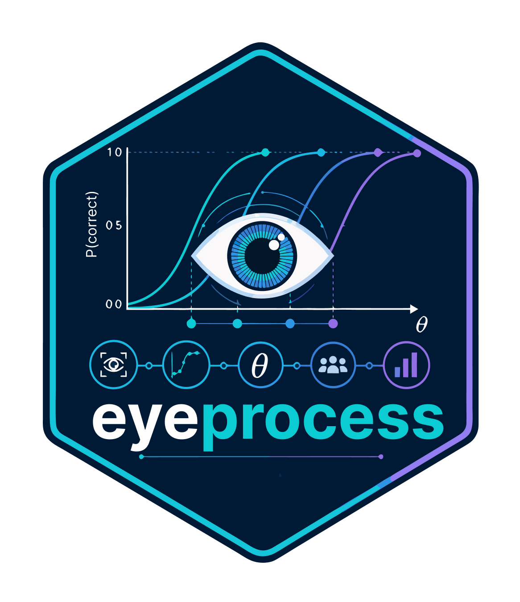
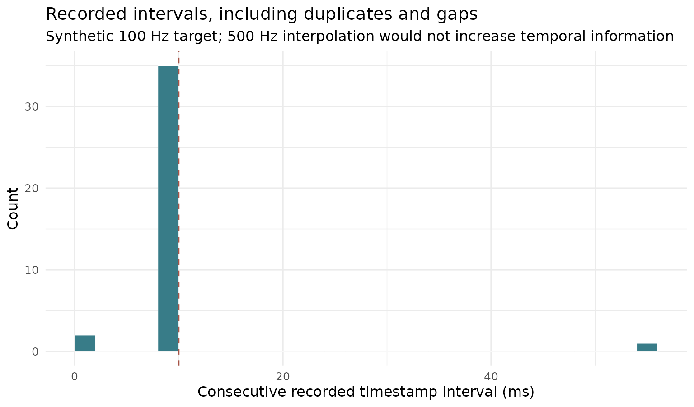
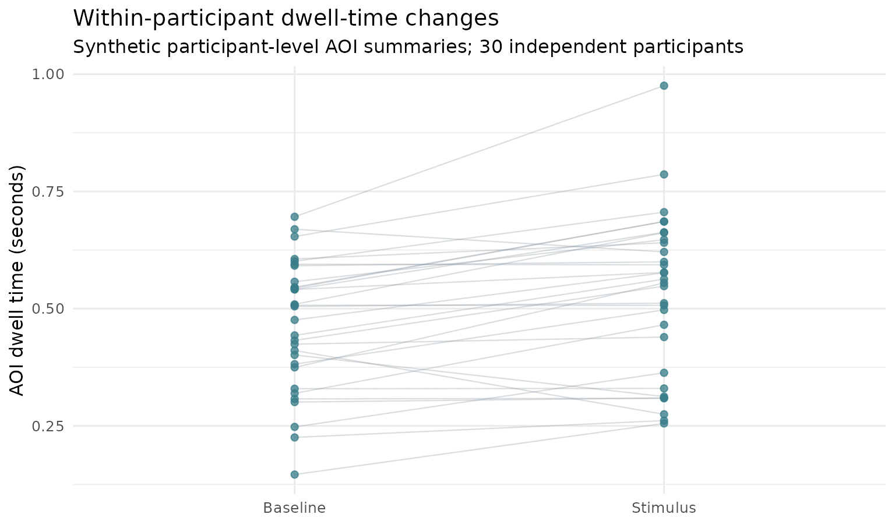
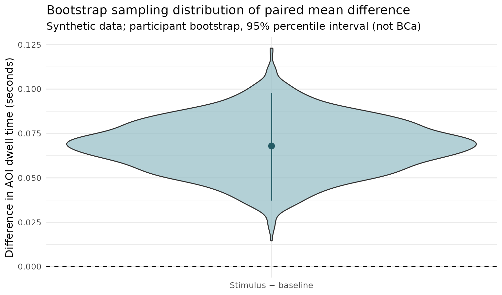
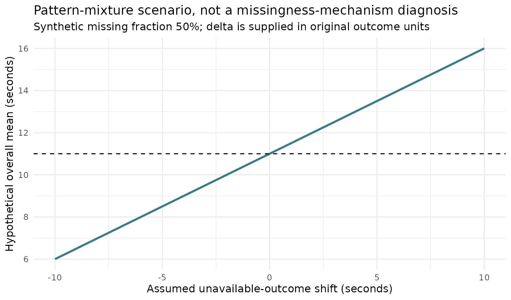

Estimation-first eye tracking: sampling, pairing, and missingness
Source:vignettes/estimation-first-eye-tracking-gallery.Rmd
estimation-first-eye-tracking-gallery.RmdRead the data-generating process before interpreting the figure
The DABEST Python project and the maintained R dabestr project provide the inspiration for showing individual observations together with effect-size uncertainty. For eye tracking, the correct observational unit and actual sampling process must be reported before an estimation plot can be used responsibly.
The three figures below are reproducible and use synthetic, illustrative data only. They are created with ggplot2 in the article so the graphics can render on the published pkgdown website without relying on experimental APIs. This article does not claim that a new estimator has been scientifically qualified or released.
Figure 1. Acquisition timestamps: the analysis grid is not the device rate
A hardware-native capability, acquisition SDK delivery rate, recorded timestamps, and interpolated analysis grid are different quantities. Here, a nominal 100 Hz synthetic stream contains a duplicated timestamp, a long gap, and a short subsequent interval. The displayed analysis grid of 500 Hz does not recover missing samples.
time_s <- cumsum(c(0, rep(.010, 15), 0, .055, .001,
rep(.010, 20)))
delta_ms <- 1000 * diff(time_s)
intervals <- data.frame(interval_ms = delta_ms)
ggplot2::ggplot(intervals, ggplot2::aes(x = interval_ms)) +
ggplot2::geom_histogram(binwidth = 2, boundary = 0, fill = "#387C88",
colour = "white", linewidth = .2) +
ggplot2::geom_vline(xintercept = 10, linetype = 2, colour = "#A65346") +
ggplot2::labs(
title = "Recorded intervals, including duplicates and gaps",
subtitle = "Synthetic 100 Hz target; 500 Hz interpolation would not increase temporal information",
x = "Consecutive recorded timestamp interval (ms)",
y = "Count"
) +
ggplot2::theme_minimal(base_size = 12)
The dashed line denotes the nominal 10 ms interval, not the
verified hardware performance. In the experimental development branch,
audit_eye_acquisition_integrity() and
plot_eye_acquisition_integrity() add explicit provenance
and interval audits; see research
PR #49.
Figure 2. Paired eye responses and participant-bootstrap uncertainty
Treating hundreds of frames or fixations from the same person as independent observations inflates the sample size. The plot therefore aggregates to one prespecified response per participant and condition, retaining matched participants.
n <- 30L
participant <- data.frame(
id = seq_len(n),
baseline = stats::rnorm(n, mean = .50, sd = .13)
)
participant$stimulus <- participant$baseline +
stats::rnorm(n, mean = .09, sd = .08)
long <- rbind(
data.frame(id = participant$id, condition = "Baseline",
dwell_s = participant$baseline),
data.frame(id = participant$id, condition = "Stimulus",
dwell_s = participant$stimulus)
)
long$condition <- factor(long$condition, levels = c("Baseline", "Stimulus"))
ggplot2::ggplot(long, ggplot2::aes(
x = condition, y = dwell_s, group = id
)) +
ggplot2::geom_line(alpha = .3, colour = "#82919C", linewidth = .4) +
ggplot2::geom_point(colour = "#387C88", size = 1.8, alpha = .75) +
ggplot2::labs(
title = "Within-participant dwell-time changes",
subtitle = "Synthetic participant-level AOI summaries; 30 independent participants",
x = NULL, y = "AOI dwell time (seconds)"
) +
ggplot2::theme_minimal(base_size = 12)
paired_diff <- participant$stimulus - participant$baseline
boots <- replicate(2000L, mean(sample(
paired_diff, size = length(paired_diff), replace = TRUE
)))
limits <- as.numeric(stats::quantile(boots, c(.025, .975)))
observed <- mean(paired_diff)
ggplot2::ggplot(data.frame(draw = boots), ggplot2::aes(y = draw, x = 1)) +
ggplot2::geom_violin(fill = "#8FBAC3", alpha = .68, width = .52) +
ggplot2::geom_pointrange(
data = data.frame(draw = observed, lo = limits[1], hi = limits[2]),
ggplot2::aes(ymin = lo, ymax = hi),
colour = "#245B65", linewidth = .65
) +
ggplot2::geom_hline(yintercept = 0, linetype = 2) +
ggplot2::scale_x_continuous(breaks = 1, labels = "Stimulus − baseline") +
ggplot2::labs(
title = "Bootstrap sampling distribution of paired mean difference",
subtitle = "Synthetic data; participant bootstrap, 95% percentile interval (not BCa)",
x = NULL, y = "Difference in AOI dwell time (seconds)"
) +
ggplot2::theme_minimal(base_size = 12)
For canonical Gardner–Altman and Cumming figures, use the maintained
R dabestr package. For mixed models, serially dependent
trajectories, or unequal observation exposure, use the appropriate
hierarchical estimand and uncertainty rather than substituting a raw
mean difference.
Figure 3. Missingness assumptions remain unidentifiable from observed rows
The following is a deliberately simple scenario
analysis, not a mechanism estimator. A group has an observed
mean of 11 seconds and half of recorded outcome rows unavailable.
Imputing unavailable rows to observed mean + delta changes the
hypothetical full-data mean according to 11 + 0.5 * delta.
Those outcomes are unobserved; no data-driven procedure here establishes
MCAR, MAR, or MNAR.
scenario <- data.frame(
delta = seq(-10, 10, by = .5),
missing_fraction = .5,
observed_mean = 11
)
scenario$scenario_mean <- scenario$observed_mean +
scenario$missing_fraction * scenario$delta
ggplot2::ggplot(
scenario, ggplot2::aes(x = delta, y = scenario_mean)
) +
ggplot2::geom_line(linewidth = 1.1, colour = "#387C88") +
ggplot2::geom_hline(yintercept = 11, linetype = 2) +
ggplot2::labs(
title = "Pattern-mixture scenario, not a missingness-mechanism diagnosis",
subtitle = "Synthetic missing fraction 50%; delta is supplied in original outcome units",
x = "Assumed unavailable-outcome shift (seconds)",
y = "Hypothetical overall mean (seconds)"
) +
ggplot2::theme_minimal(base_size = 12)
Reporting boundary: identify the physical gaze target and coordinate reference when reporting accuracy; distinguish timestamp quality from hardware delivery; state the participant/trial estimand before estimation plots; and disclose missingness assumptions. Research diagnostics remain in PR #49, pending scientific qualification and formal lifecycle review.